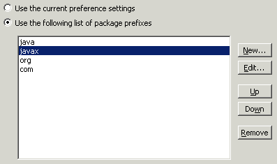

Audit - Rules - Import UsageDescriptionThis group contains audit rules that check the import statements for adherence to common coding practices. |
| Rules: |
Summary
Types and packages should only be imported once within a compilation unit.
Description
This audit rule checks to ensure that there are never more than one import declaration with the same package or type name. This does not flag the case where a package is imported (a demand import) and a type from the package is separately imported explicitly. (Such a situation is sometimes required to disambiguate names.)
Example import java.util.Vector;
import java.util.Vector;
Summary
Packages that are implicitly imported should never be explicitly imported.
Description
This audit rule checks to ensure that none of the import declarations imports from a package that is implicitly imported (either java.lang or the package containing the compilation unit being audited).
Example import java.lang.*;
Summary
Import declarations should be consistently ordered.
Description
This audit rule finds import declarations that are not in the specified order.
Example
If the order of the import declarations has been configured such that packages that start with "com" should appear before packages that begin with "org", the following imports would be flagged as being in the wrong order:
import org.eclipse.core.resources.*;
import com.instantiations.codePro.*;

Summary
Only one style of import should be used.
Description
This audit rule checks to ensure that all of the import declarations have the same style, either demand imports (such as "java.util.*"), or explicit imports (such as "java.util.List").
Example
If the rule is configured such that only explicit imports are allowed, the following import would be flagged as a violation:
import java.util.*;
Summary
Some packages contain internal implementation details and should never be imported.
Description
This audit rule allows the user to specify a list of package names that should not be imported and will check that none of the packages on the list are imported. For example, if the package name internal is included in the list, then any import that contains the identifier internal as one of the components of the package name would be flagged.
Example import org.eclipse.core.internal.runtime.*;
Summary
There should not be imports for types or packages that are not referenced.
Description
This audit rule checks to ensure that each of the import declarations is actually necessary. A type import is considered necessary if the type that is imported by it is referenced within the compilation unit. A demand import is considered necessary if there is at least one type within the specified package that is referenced that is not also imported by a type import.
In neither case does this rule consider whether the reference to the type is fully qualified, only that the type is being referenced.
Example
The following import statement would be flagged as a violation because the package is always implicitly imported:
import java.lang.*;